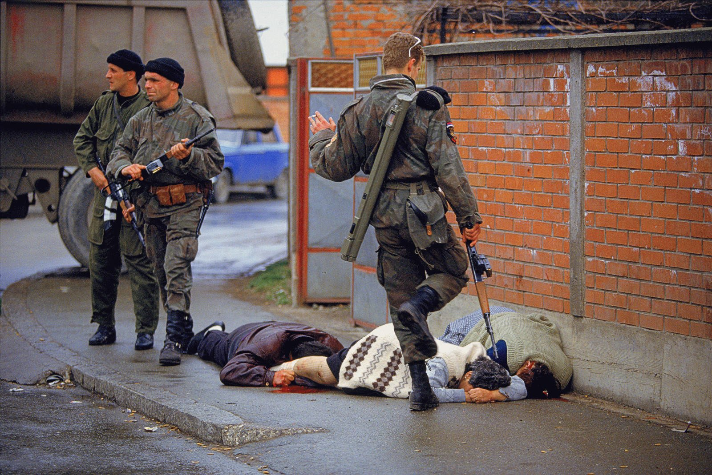

Информацию об этнических чистках в Крыму проиллюстрировали фотографией из Боснии
17 марта на странице Никиты Сафроненко в социальной сети Фейсбук появилась информация о том, что самопровозглашенная власть Крыма якобы проводит этнические чистки.
«Так называемая «Самооборона Крыма» начала исполнять неписанный приказ Аксенова под названием «Большая Уборка».Цель операции — существенные изменения этнического состава Крымского полуострова… Объекты операции — представители крымско-татарской и украинской национальностей», — написал Сафроненко.
Данная информация проиллюстрирована фотографией, на которой вооруженные мужчины стоят рядом с лежащими ниц людьми с простреленной головой.
Однако данное фото было сделано не в Крыму.Его автор — Ron Haviv — снял его во время войны в Боснии.Расстрелянные люди — это боснийские мусульмане, мирные граждане, погибшие во время первого боя за Боснию 31 марта 1992 года.
У нас нет ни подтверждений, ни опровержений информации об этнических чистках в Крыму.Однако, судя по ее распространению лишь из одного источника, который не предоставил доказательств ее правдивости, у нас есть сомнения в том, что она подтвердится.
Апд.Позже автор сам исправил подпись под фотографией на фейсбуке, пояснив что фотография таки из Боснии.Использовал ее потому, что фотодоказательств у него пока еще нет.Но, по его словам, это фото описывает общую ситуацию и сценарий.
Posted On: 2014-03-16T21:00:00

Content Date: 2014-03-16
Download Date: 2021-07-16
Document ID: L0C04F9LO